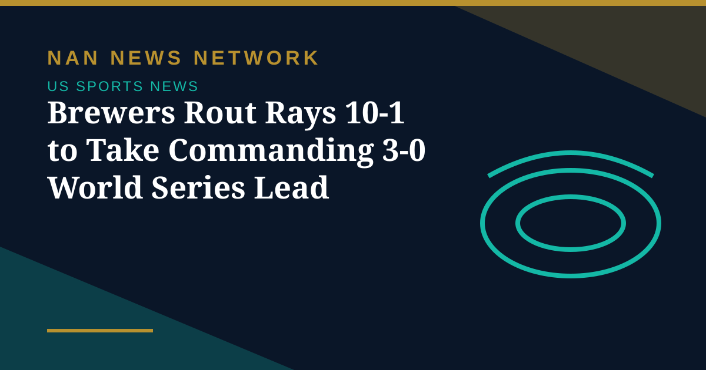
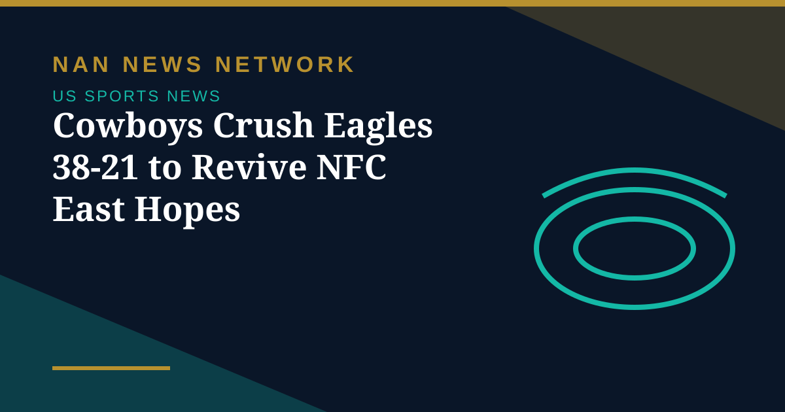
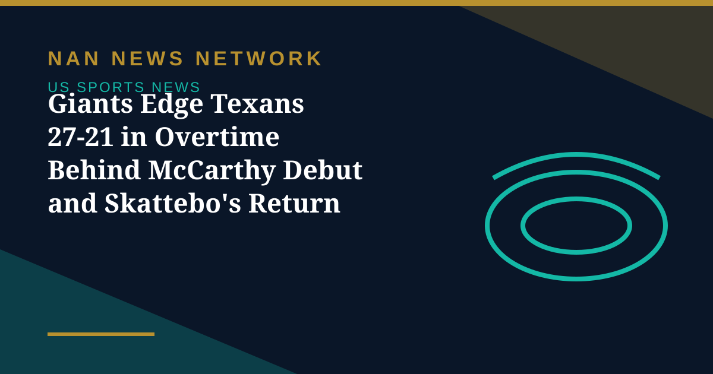
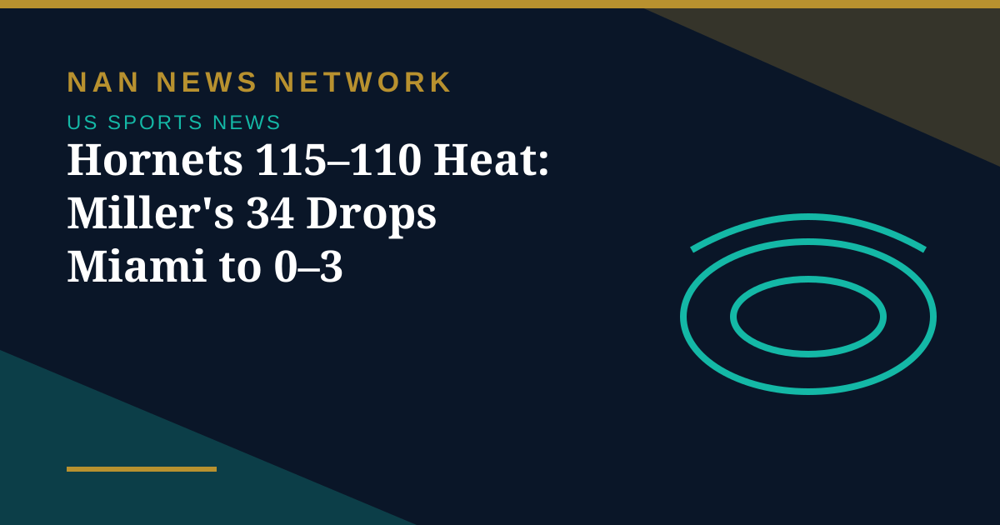
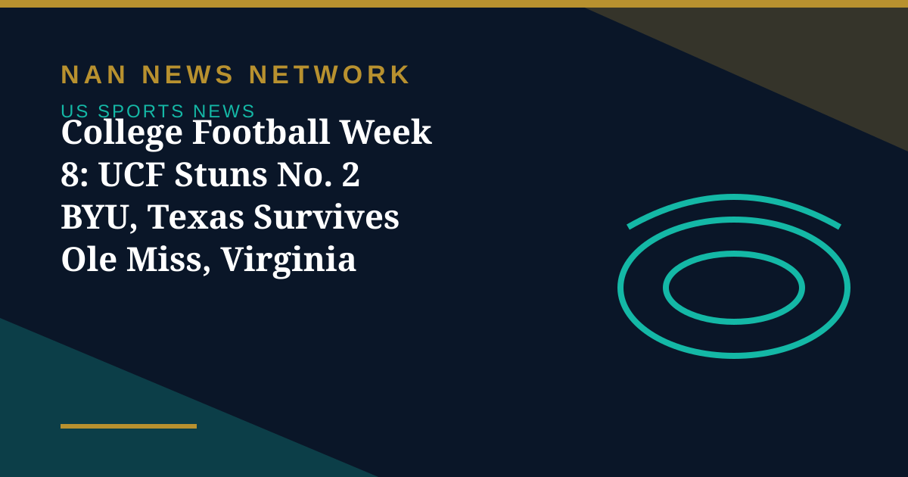

MLB
Brewers Rout Rays 10-1 to Take Commanding 3-0 World Series Lead
Milwaukee dismantled Tampa Bay 10-1 in Game 3 behind an eight-run fifth inning, moving one win from a World Series title and a first championship for the franchise.
United States • Sports
Scores, standings and the stories fans are searching for.

Milwaukee dismantled Tampa Bay 10-1 in Game 3 behind an eight-run fifth inning, moving one win from a World Series title and a first championship for the franchise.
Milwaukee dismantled Tampa Bay 10-1 in Game 3 behind an eight-run fifth inning, moving one win from a World Series title and a first championship for the franchise.

Dallas bounced back in the division race by beating Philadelphia 38-21 on Monday night, handing the defending champions their fifth straight loss behind three Dak Prescott touchdown passes.
Monday, October 26 is the 2026 sports equinox, a rare night when the World Series, the WNBA Finals, Monday Night Football and regular-season NBA and NHL games all take place.

The New York Giants beat the Houston Texans 27-21 in overtime on Sunday, fueled by a strong debut from J.J. McCarthy and a bounce-back rushing day from Cam Skattebo.
Philadelphia entered Sunday 3–0 and Detroit 2–0, with both teams living up to preseason contender billing — and both managing key absences for the Oct. 25 clash.

Brandon Miller bounced back from one of the worst nights in Hornets history to score 34, as Charlotte held off a late Miami rally and left the star-studded Heat winless.

Week 8 delivered upsets everywhere: UCF beat No. 2 BYU in double overtime, Indiana survived Michigan 13–6 in overtime, and Virginia Tech won 20–16 at Clemson on a late fourth-down touchdown.